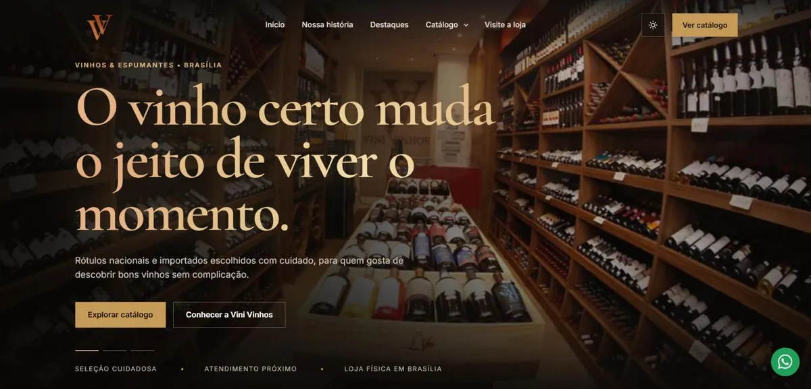
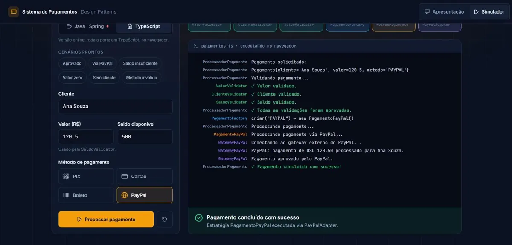
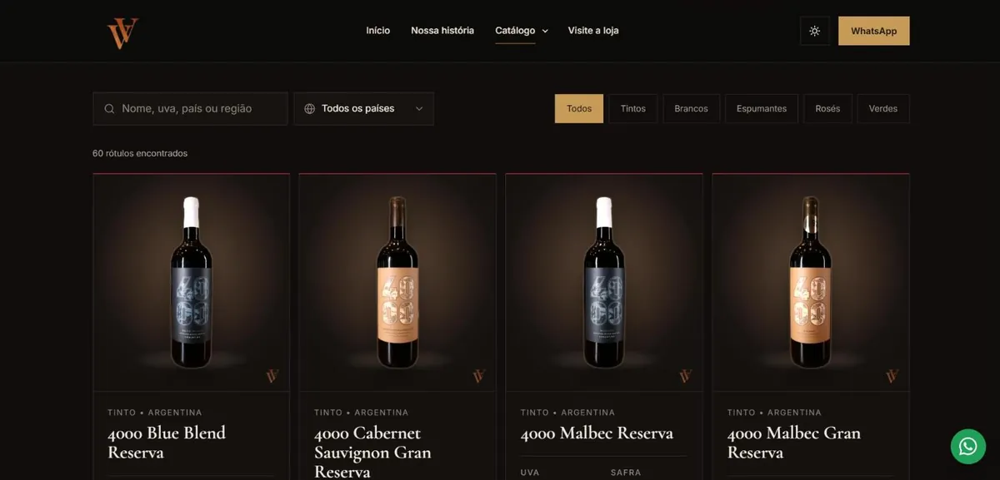
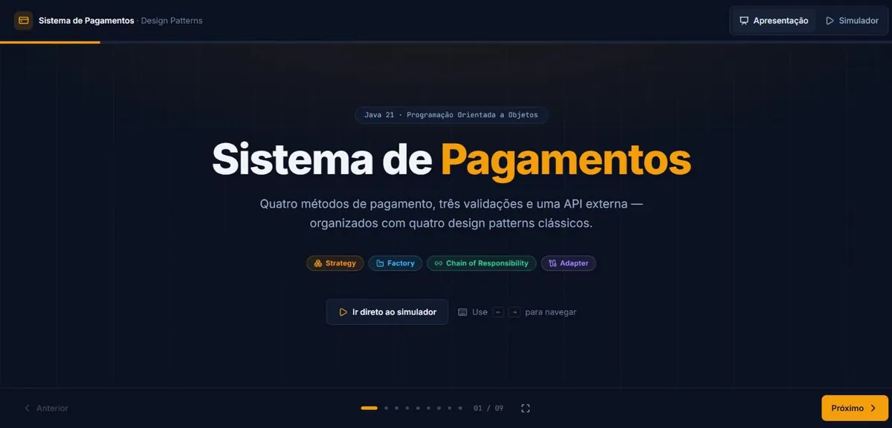

O site da loja de vinhos do meu pai, na Asa Norte. Clientes navegam pelo catálogo e pedem pelo WhatsApp; meu pai cadastra os vinhos sozinho por um painel que eu fiz.
Trabalho dos dois lados de uma aplicação. No dia a dia uso Python, TypeScript e React, com Docker; nos estudos, me aprofundo em Java e Spring Boot.
Hoje sou estagiário de desenvolvimento na CDS Solutions, onde integro APIs bancárias e faço melhorias no front-end e no back-end de sistemas ERP e CRM. Também curso Análise e Desenvolvimento de Sistemas na Católica de Brasília. Gosto de código organizado em camadas, de entender por que um padrão existe antes de usá-lo e de terminar o que começo.
CDS Solutions · Presencial
Python · TypeScript · React · Docker
Integração de APIs bancárias e melhorias no front-end e no back-end de sistemas ERP e CRM.
FI Group · Híbrido
Apoio à avaliação técnica de projetos de tecnologia: análise de documentação, verificação de conformidade com a Lei do Bem e a Lei de TICs, relatórios técnicos e conversa direta com clientes para esclarecer dúvidas.
INSS · Superintendência
Gestão de processos no SEI, lançamento de dados em sistemas do governo (OFCWEB, SIGME, SCDP), relatórios, ofícios e planilhas em Excel. Foi onde aprendi a lidar com prazos, burocracia e muita informação ao mesmo tempo.

O site da loja de vinhos do meu pai, na Asa Norte. Clientes navegam pelo catálogo e pedem pelo WhatsApp; meu pai cadastra os vinhos sozinho por um painel que eu fiz.

Quatro design patterns no mesmo fluxo de pagamento, com API em Spring Boot e um simulador em React que mostra cada etapa.
CRUD completo em camadas, com JPA/Hibernate e banco H2. Meu primeiro projeto Spring Boot de ponta a ponta.
Descobre a chave de uma mensagem cifrada e decodifica. Ganhou uma interface em Swing além do que a atividade pedia.
Calculadora inspirada na do macOS, com o visor atualizado pelo padrão Observer.
Começou no terminal e virou aplicação gráfica completa, reaproveitando o mesmo modelo orientado a objetos.
Simulador bancário de terminal feito em equipe, com contas, transferências e dados salvos em arquivos CSV.
IA no dia a dia · Claude
O Claude faz parte da minha rotina de desenvolvimento, principalmente pelo Claude Code no terminal. Ele acelera o trabalho, mas a decisão sobre o que entra no código e a revisão final continuam comigo.
Mapear um projeto que eu não escrevi, achar onde uma regra mora e seguir o fluxo de uma requisição.
Transformar uma tarefa em código funcionando mais rápido e melhorar o que já existe aos poucos, sem quebrar o resto.
Gerar casos de teste, investigar bugs e pedir uma segunda leitura antes de abrir um pull request.
Escrever documentação técnica, READMEs e descrições de PR claras para quem vem depois.
Graduação · EAD · em andamento
Universidade Católica de Brasília, 4º semestre
216 horas concluídas
| Curso | Instituição | Horas |
|---|---|---|
| Java COMPLETO: do zero ao profissional | Udemy | 77h |
| Microsoft Excel, básico ao avançado | Fundação Bradesco | 65h |
| Bootcamp Itaú: Java com Inteligência Artificial | DIO | 45h |
| Entendendo TypeScript | Udemy | 11h |
| Oracle Java Foundations 95% no assessment | Oracle | 10h |
| Fundamentos de TI: hardware e software | Fundação Bradesco | 7h |
| Angular v18 | Kipper Dev | 1h |
05 · Contato

2026 · Projeto real, em produção
O site da Vini Vinhos, a loja de vinhos do meu pai na Asa Norte, em Brasília. Começou como um projeto simples e virou o site oficial da loja, que está no ar e é usado no dia a dia.
Quem visita encontra o catálogo com busca e filtros e faz o pedido direto pelo WhatsApp. Por trás, meu pai cadastra e edita os vinhos sozinho num painel administrativo, sem precisar mexer em código.

2026 · Java 21, Spring Boot e React
Um mesmo pagamento passando por quatro padrões de projeto, cada um com uma responsabilidade clara. Feito para entender na prática quando cada padrão resolve um problema de verdade.
2025 · API REST
CRUD completo de usuários organizado em controller, service e repository, com JPA/Hibernate, Lombok e banco H2 em memória. Meu primeiro projeto Spring Boot de ponta a ponta.
2026 · Projeto acadêmico
A atividade era analisar um programa Java que cifrava mensagens sem revelar a chave, descobrir qual era a chave e decodificar o texto. Além do que foi pedido, fiz uma interface em Swing para cifrar e decifrar qualquer mensagem.
2026 · Java desktop
Calculadora com a cara da do macOS, feita durante o curso de Java. O visor é um observador da memória da calculadora: quando um botão muda o valor, o visor é avisado e se atualiza sozinho.
2025 · Java desktop
Fiz primeiro a versão de terminal e depois levei o mesmo modelo para uma interface gráfica em Swing, com um tabuleiro de 16 por 30 campos e 50 minas.
UCB · Projeto em equipe
Simulador bancário de terminal feito em equipe na faculdade. Cobre o ciclo de uma conta: abertura, depósito, saque, transferência, pagamento e encerramento, com os dados salvos em arquivos CSV.